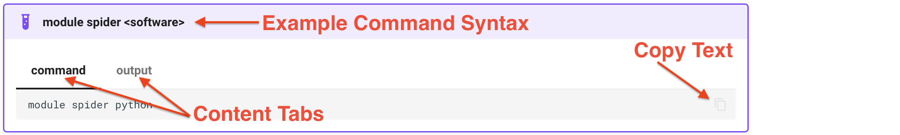

Discovering and Loading Software¶
Show Table of Commands
| Command | Description |
|---|---|
module spider <software> |
Query if <software> is available |
module load <software> |
Load <software> into environment |
module list |
List loaded software packages |
module rm <software> |
Remove previously loaded <software> from environment |
module unload <software> |
Same as module rm <software> |
module purge |
Remove all previously loaded <software> from environment |
CRCD uses the Lmod Environment Modules tool to manage and provision software applications. The
command module spider <software> (1) shows if a package is available. For example, (2)
- Throughout the examples, we use the conventional syntax
<variable>to represent a placeholder for an expected value that the user will provide. 
module spider <software>
module spider python
---------------------------------------------------------------------------------------------------------------------------------------
python:
---------------------------------------------------------------------------------------------------------------------------------------
Versions:
python/ondemand-jupyter-python3.8
python/ondemand-jupyter-python3.9
python/ondemand-jupyter-python3.11
python/py37_venv_23.1.0
python/pytorch_251_311_cu124
python/tensorflow_218_311
python/3.7.0
python/3.7.17
python/3.8.18
python/3.8.20-orhs6eu
python/3.9.18
python/3.10.13
python/3.11.6
python/3.11.9
python/3.11.11-fayknjn
python/3.12.0
python/3.12.8
python/3.13.5
Other possible modules matches:
openslide-python py-biopython py-bx-python py-gitpython py-ipython py-ipython-genutils py-meson-python py-python-dateutil ...
---------------------------------------------------------------------------------------------------------------------------------------
To find other possible module matches execute:
$ module -r spider '.*python.*'
---------------------------------------------------------------------------------------------------------------------------------------
For detailed information about a specific "python" package (including how to load the modules) use the module's full name.
Note that names that have a trailing (E) are extensions provided by other modules.
For example:
$ module spider python/3.13.5
---------------------------------------------------------------------------------------------------------------------------------------
will show all the available Python versions. Repeating this command with a version-specific Python will display how to load the package and if there are any dependencies:
module spider <specific software>
module spider python/3.13.5
---------------------------------------------------------------------------------------------------------------------------------------
python: python/3.13.5
---------------------------------------------------------------------------------------------------------------------------------------
You will need to load all module(s) on any one of the lines below before the "python/3.13.5" module is available to load.
gcc/11.5.0-dak7qob
Help:
The Python programming language.
As instructed by the output of the python/3.13.5 module, you will need to load the gcc/11.5.0-dak7qob package before loading
the version-specific Python. The command to load a software package is module load <software>. You can load the packages one at a time
or all on the same commandline, making sure that the depedencies are loaded first:
module load <software>
module load gcc/11.5.0-dak7qob
module load python/3.13.5
module load gcc/11.5.0-dak7qob python/3.13.5
To show all the software that had been loaded into your environment, use the command module list:
module list
module list
Currently Loaded Modules:
1) gcc/11.5.0-dak7qob 5) expat/2.5.0-civmiu6 9) gettext/0.21-lwfvy7g 13) sqlite/3.43.2-usqgkvi 17) xz/5.6.3-j7xphdp
2) bzip2/1.0.8 6) ncurses/6.4 10) libffi/3.4.4-o6i2vfh 14) util-linux-uuid/2.38.1-jgrgx4c 18) python/3.13.5
3) libmd/1.0.4-pr3r6b6 7) readline/8.2-hdjus6f 11) zlib-ng/2.1.5-g64y7ia 15) glibc/2.34-45if5qv
4) libbsd/0.11.7-tjvomkh 8) gdbm/1.23-i7j3ckd 12) openssl/3.1.3-527o4u3 16) gcc-runtime/11.5.0-ysx7ygs
To remove a software package from your environment, use the command module rm <software>:
module rm <software>
module list
module rm python/3.13.5
module list
[kimwong@login1.crc.pitt.edu ~]$module list
Currently Loaded Modules:
1) gcc/8.2.0 2) python/anaconda3.10-2022.10
[kimwong@login1.crc.pitt.edu ~]$module rm python/anaconda3.10-2022.10
[kimwong@login1.crc.pitt.edu ~]$module list
No modules loaded
[kimwong@login1.crc.pitt.edu ~]$
You should have noticed in the output that removal of the python/anaconda3.10-2022.10 module also
removes gcc/8.2.0. This is because the latter was a dependency for the Python module.
What happens if I remove a dependency first?
Let's load the modules again and try it out:
module rm <software>
module load gcc/8.2.0 python/anaconda3.10-2022.10
module list
module rm gcc/8.2.0
module list
[kimwong@login1.crc.pitt.edu ~]$module load gcc/8.2.0 python/anaconda3.10-2022.10
[kimwong@login1.crc.pitt.edu ~]$module list
Currently Loaded Modules:
1) gcc/8.2.0 2) python/anaconda3.10-2022.10
[kimwong@login1.crc.pitt.edu ~]$module rm gcc/8.2.0
Inactive Modules:
1) python/anaconda3.10-2022.10
[kimwong@login1.crc.pitt.edu ~]$module list
Currently Loaded Modules:
None found.
Inactive Modules:
1) python/anaconda3.10-2022.10
[kimwong@login1.crc.pitt.edu ~]$
The removal of the dependent software makes the main software module inactive, which has the same
effect as a module rm <software>.
Now, suppose you have a few software packages loaded. Do you need
to remove each package individually or is there a single global remove command? The command is
module purge:
module purge
module load gcc/8.2.0 python/anaconda3.10-2022.10 r/3.6.0
module list
module purge
module list
[kimwong@login1.crc.pitt.edu ~]$module load gcc/8.2.0 python/anaconda3.10-2022.10 r/3.6.0
[kimwong@login1.crc.pitt.edu ~]$module list
Currently Loaded Modules:
1) gcc/8.2.0 3) java/1.8.0_181-oracle 5) bzip2/1.0.6 7) pcre/8.40 9) gsl/2.5 11) hdf5/1.10.4 13) gdal/2.4.2 15) r/3.6.0
2) python/anaconda3.10-2022.10 4) zlib/1.2.9 6) xz/5.2.3 8) curl/7.52.1 10) jags/4.3.0 12) netcdf/4.6.3 14) openmpi/1.8.8
[kimwong@login1.crc.pitt.edu ~]$module purge
[kimwong@login1.crc.pitt.edu ~]$module list
No modules loaded
[kimwong@login1.crc.pitt.edu ~]$
Next steps¶
You can now find and load software. The next stage is asking the scheduler for the compute resources to run it — continue to Requesting resources.
If the software you need isn't a module¶
-
Install your own packages
Create conda or virtual environments to install Python packages yourself where modules fall short.
-
Run containers
Use Singularity to run Docker/OCI images when software isn't provided as a module.
-
Browse the catalog
See every package installed on the clusters and search for what you need.
See also R and RStudio and Application Environment.